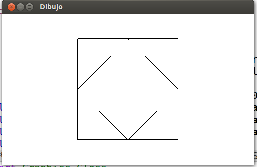

Diagonales principales de una matriz
Definir la función
diagonalesPrincipales :: Matriz a -> [[a]]
tal que (diagonalesPrincipales p) es la lista de las diagonales principales de p. Por ejemplo, para la matriz
1 2 3 4 5 6 7 8 9 10 11 12
la lista de sus diagonales principales es
[[9],[5,10],[1,6,11],[2,7,12],[3,8],[4]]
En Haskell,
λ> diagonalesPrincipales (listArray ((1,1),(3,4)) [1..12]) [[9],[5,10],[1,6,11],[2,7,12],[3,8],[4]]
Segmentos de longitud dada
Definir la función
segmentos :: Int -> [a] -> [[a]]
tal que (segmentos n xs) es la lista de los segmentos de longitud n de la lista xs. Por ejemplo,
segmentos 3 [1..5] == [[1,2,3],[2,3,4],[3,4,5]]
Reconocimiento de potencias de 2
Definir la función
esPotenciaDeDos :: Integer -> Bool
tal que (esPotenciaDeDos n) se verifica si n es una potencia de dos (suponiendo que n es mayor que 0). Por ejemplo.
esPotenciaDeDos 1 == True esPotenciaDeDos 2 == True esPotenciaDeDos 6 == False esPotenciaDeDos 8 == True esPotenciaDeDos 1024 == True esPotenciaDeDos 1026 == False esPotenciaDeDos (2^100000) == True
Nota: Comprobar la definición para grandes potencias de 2.
Menor número triangular con más de n divisores
La sucesión de los números triangulares se obtiene sumando los números naturales.
* * * * * * * * * * * * * * * * * * * * * * * * * * * * * * * * * * * 1 3 6 10 15
Así, el 7º número triangular es
1 + 2 + 3 + 4 + 5 + 6 + 7 = 28.
Los primeros 10 números triangulares son
1, 3, 6, 10, 15, 21, 28, 36, 45, 55, ...
Los divisores de los primeros 7 números triangulares son:
1: 1 3: 1,3 6: 1,2,3,6 10: 1,2,5,10 15: 1,3,5,15 21: 1,3,7,21 28: 1,2,4,7,14,28
Como se puede observar, 28 es el menor número triangular con más de 5 divisores.
Definir la función
menorTriangularConAlMenosNDivisores :: Int -> Integer
tal que (menorTriangularConAlMenosNDivisores n) es el menor número triangular que tiene al menos n divisores. Por ejemplo,
menorTriangularConAlMenosNDivisores 5 == 28 menorTriangularConAlMenosNDivisores 50 == 25200 menorTriangularConAlMenosNDivisores 500 == 76576500
Dos cuadrados encajados
Definir la función
dosCuadrados :: Picture
que dibuje dos cuadrados encajados como se muestra en la siguiente figura

Nota: Escribir las soluciones usando la siguiente plantilla
import Graphics.Gloss main :: IO () main = display (InWindow "Dibujo" (500,300) (20,20)) white dosCuadrados dosCuadrados :: Picture dosCuadrados = undefined
Particiones de enteros positivos
Una partición de un entero positivo n es una manera de escribir n como una suma de enteros positivos. Dos sumas que sólo difieren en el orden de sus sumandos se consideran la misma partición. Por ejemplo, 4 tiene cinco particiones: 4, 3+1, 2+2, 2+1+1 y 1+1+1+1.
Definir la función
particiones :: Int -> [[Int]]
tal que (particiones n) es la lista de las particiones del número n. Por ejemplo,
particiones 4 == [[4],[3,1],[2,2],[2,1,1],[1,1,1,1]] particiones 5 == [[5],[4,1],[3,2],[3,1,1],[2,2,1],[2,1,1,1],[1,1,1,1,1]] length (particiones 50) == 204226
Mínimo producto escalar
El producto escalar de los vectores [latex][a_1,a_2,\dots,a_n][/latex] y [latex][b_1,b_2,\dots,b_n][/latex] es [latex]a_1 \times b_1 + a_2 \times b_2 + \dots + a_n \times b_n[/latex].
Definir la función
menorProductoEscalar :: (Ord a, Num a) => [a] -> [a] -> a
tal que (menorProductoEscalar xs ys) es el mínimo de los productos escalares de las permutaciones de xs y de las permutaciones de ys. Por ejemplo,
menorProductoEscalar [3,2,5] [1,4,6] == 29 menorProductoEscalar [3,2,5] [1,4,-6] == -19 menorProductoEscalar [0..9] [0..9] == 120 menorProductoEscalar [0..99] [0..99] == 161700 menorProductoEscalar [0..999] [0..999] == 166167000
Mayor capicúa producto de dos números de n cifras
Un capicúa es un número que es igual leído de izquierda a derecha que de derecha a izquierda.
Definir la función
mayorCapicuaP :: Integer -> Integer
tal que (mayorCapicuaP n) es el mayor capicúa que es el producto de dos números de n cifras. Por ejemplo,
mayorCapicuaP 2 == 9009 mayorCapicuaP 3 == 906609 mayorCapicuaP 4 == 99000099 mayorCapicuaP 5 == 9966006699
Siguiente elemento en una lista
Definir la función
siguiente :: Eq a => a -> [a] -> Maybe a
tal que (siguiente x ys) es justo el elemento siguiente a la primera ocurrencia de x en ys o Nothing si x no pertenece a ys. Por ejemplo,
siguiente 5 [3,5,2,5,7] == Just 2 siguiente 9 [3,5,2,5,7] == Nothing siguiente 'd' "afdegdb" == Just 'e' siguiente "todo" ["En","todo","la","medida"] == Just "la" siguiente "nada" ["En","todo","la","medida"] == Nothing siguiente 999999 [1..1000000] == Just 1000000 siguiente 1000000 [1..1000000] == Nothing